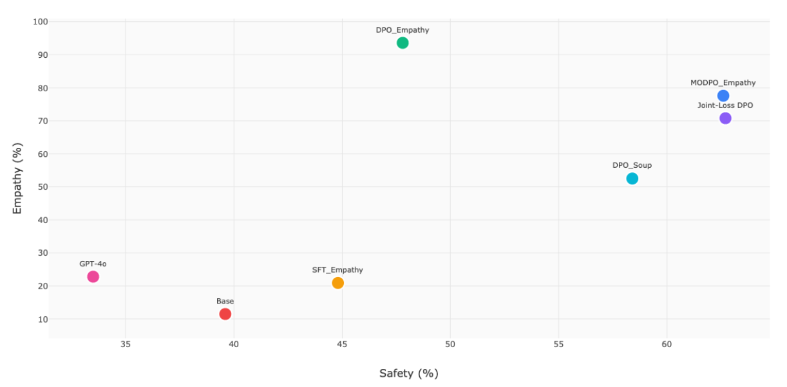
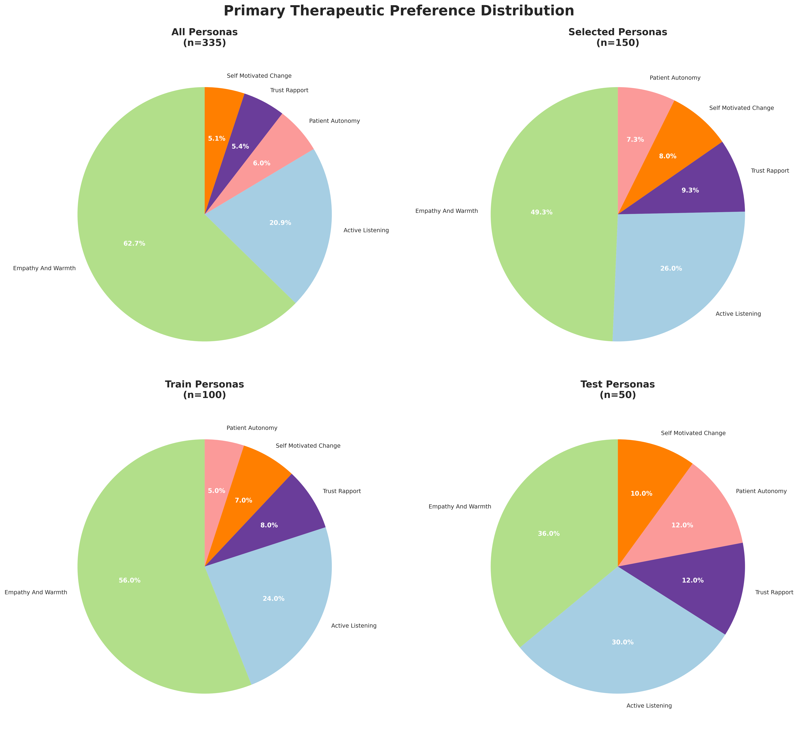
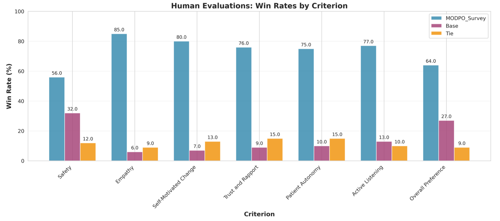
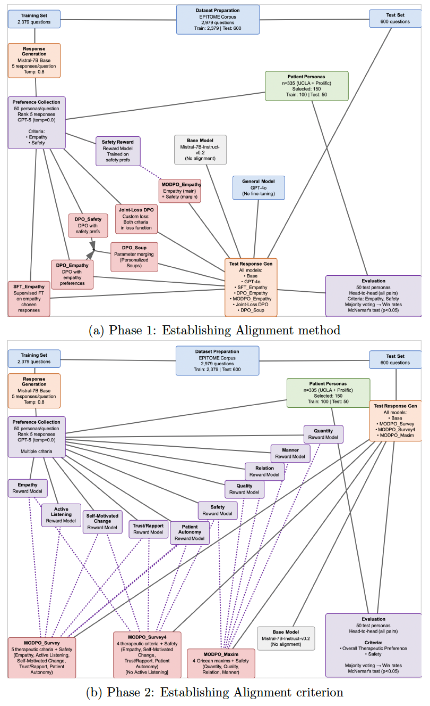

Balancing empathy and safety in therapeutic AI
Mental health disorders affect over 1 billion people worldwide, yet access to care remains limited by workforce shortages and cost constraints. While AI systems show therapeutic promise, current alignment approaches optimize objectives independently, failing to balance patient preferences with clinical safety.
We survey 335 individuals with lived mental health experience to collect preference rankings across therapeutic dimensions, then develop a multi-objective alignment framework using direct preference optimization. We train reward models for six criteria — empathy, safety, active listening, self-motivated change, trust/rapport, and patient autonomy — and systematically compare multi-objective approaches against single-objective optimization, supervised fine-tuning, and parameter merging.
Multi-objective DPO (MODPO) achieves superior balance compared to single-objective optimization, and therapeutic criteria outperform general communication principles by 17.2%. Blinded clinician evaluation confirms MODPO is consistently preferred, with LLM-evaluator agreement comparable to inter-clinician reliability.
The safety–empathy tradeoff
Single-objective optimization forces a tradeoff: maximizing empathy comes at the cost of safety. MODPO finds the upper-right region — high on both dimensions simultaneously.
47.8% safety
62.6% safety

What patients value in therapy
We surveyed 335 individuals with lived mental health experience. Empathy emerged as the dominant priority (62.7%), but all five therapeutic dimensions scored uniformly high (4.16–4.35 out of 5.0) — validating the need for multi-objective optimization rather than optimizing any single criterion alone.

Clinicians prefer MODPO
Six licensed mental health clinicians conducted blinded evaluations across 100 therapeutic scenarios. MODPO Survey was preferred across every dimension, with the largest margins on empathy (85%), self-motivated change (80%), and active listening (77%).

LLM-as-Judge validated
Our persona-based LLM evaluation produces judgments that align with clinician annotations at a level comparable to inter-clinician agreement — supporting its use as a scalable proxy for expert judgment.
Multi-objective preference optimization
Our approach combines patient-centered preference collection with multi-objective direct preference optimization (MODPO). We survey individuals with lived mental health experience, train separate reward models for each therapeutic criterion, and use MODPO's margin-based framework to simultaneously optimize across all objectives while treating safety as a non-negotiable constraint.

BibTeX
@article{beikzadeh2025modpo,
title = {Multi-Objective Alignment of Language Models
for Personalized Psychotherapy},
author = {Beikzadeh, Mehrab and Asadollah salmanpour, Yasaman
Asadollah and Suvarna, Ashima and
Sankararaman, Sriram and Malgaroli, Matteo
and Sarrafzadeh, Majid and Gabriel, Saadia},
journal = {arXiv preprint arXiv:2602.16053},
year = {2026}
}
}